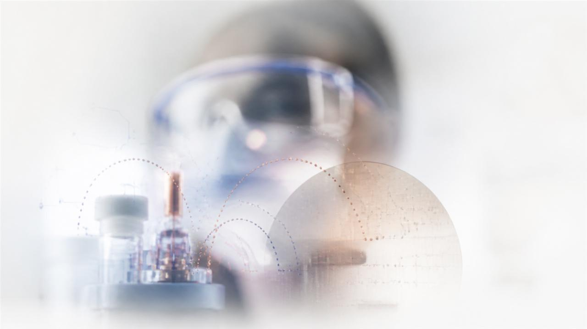

Energy Device · Lead Research
Higher power density
in compact RED batteries
Redesigned ion-transport paths and device architecture to increase volumetric power density.
ELECTROANALYTICAL CHEMISTRY · SNU

I’m Sanguk Park.I conduct electroanalytical chemistry research to better understand
energy devices and electrode interfaces.
// SELECTED RESEARCH
Selected projects spanning energy conversion, interface diagnostics, and microdevice fabrication.
Energy Device · Lead Research
Redesigned ion-transport paths and device architecture to increase volumetric power density.

Microfluidics · Collaboration
Developing monolithic power sources that combine microchannels with ion-exchange membranes.
Interface Diagnostics · PhD
Tracking interfacial changes non-destructively through FT-EIS and automated measurements.
Fabrication · Analysis
Designing experimental workflows from photolithography to data interpretation.
// ABOUT
At the Electrochemistry Laboratory in the Department of Chemistry at Seoul National University, I design electrochemical devices, analyze interfacial reactions, and fabricate photolithography-based microdevices. My research begins by translating differences in small-scale structures and diffusion paths into quantitative metrics.
// METHODS & TOOLS
I cover the full path to reproducible experiments, from device fabrication to signal interpretation.
FT-EIS, multisine, Warburg impedance
Photolithography, wet etching, lift-off
Potentiostat, NI DAQ, LabVIEW, COMSOL
// RESEARCH NOTES
A concise overview of my research perspective and the questions I am currently exploring.
I study aqueous energy systems based on reverse electrodialysis and microfluidics.
It enables time-resolved analysis of changes at electrode interfaces and mass-transfer characteristics.
Yes. I fabricate experimental devices using photolithography, wet etching, and electrodeposition.
Please share your research interests and experimental environment by email, and we can explore where our work may connect.